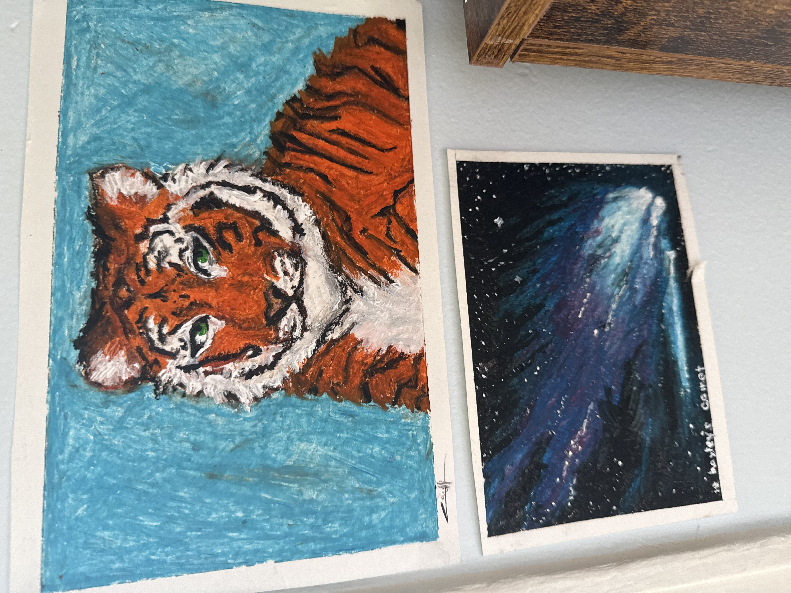
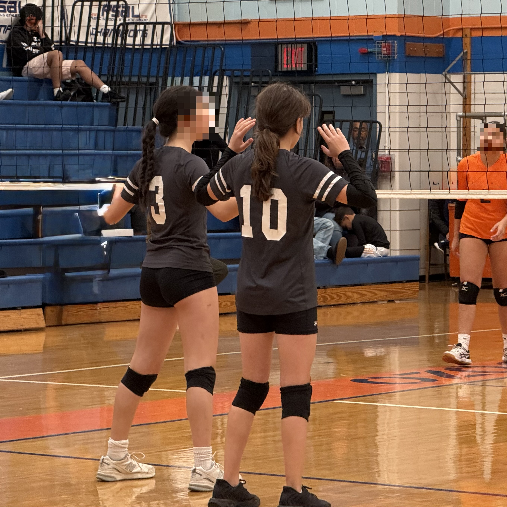

My name is Cara Horsman, and here are the three most important things about me.

I love wildlife biology and conservation, and hope to pursue a career in the field.

I am an avid artist who loves to explore different medias and subjects.

I am a student athlete with a passion for volleyball and improving my health.